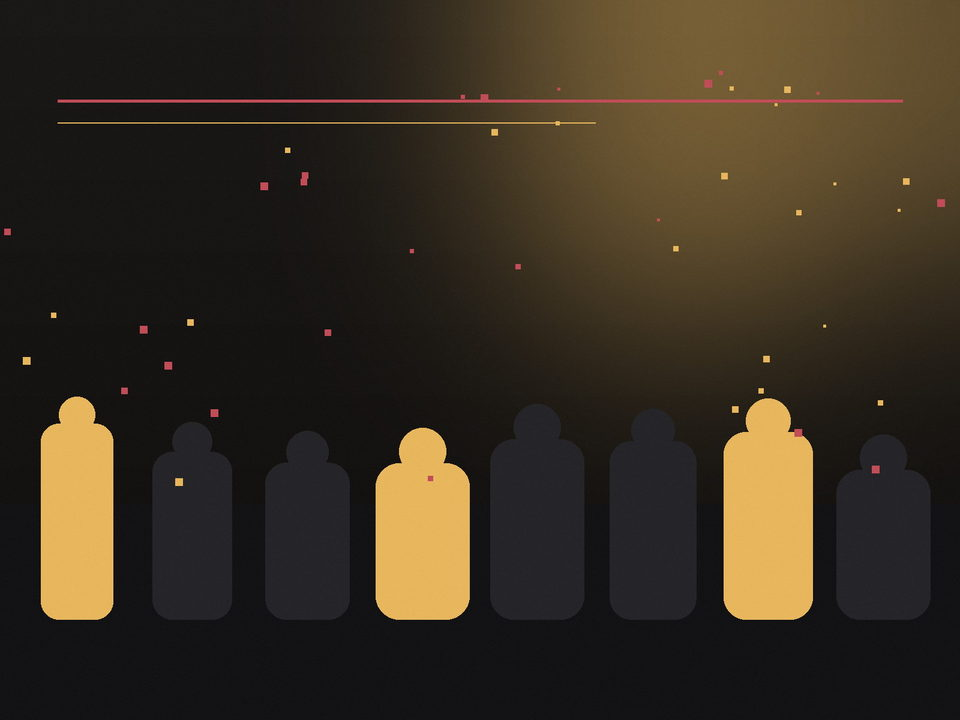
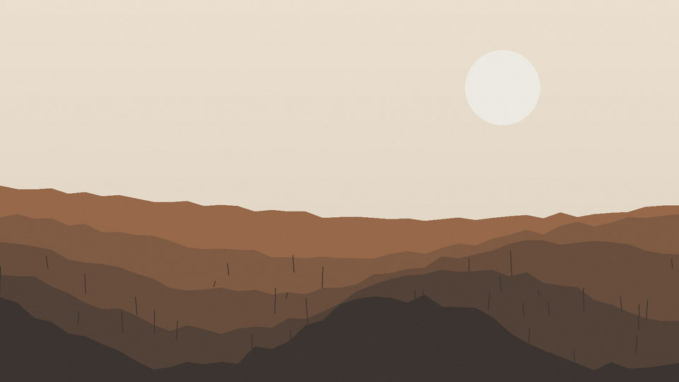

Live / Concerts
Live coverage, tour documentation, festivals, editorial stories, and artist portraits.

Four distinct practices, one point of view: human energy, identity, and place.
Concerts lead. Portraits, events, milestones, and field notes show the range around that center.
Live coverage, tour documentation, festivals, editorial stories, and artist portraits.
Natural portraiture and stylized image-making for artists, editorial work, and creative commissions.

Consistent coverage from establishing frame to the final atmosphere, including graduation work.

A slower visual notebook of landscape, nature, and the character of place.
